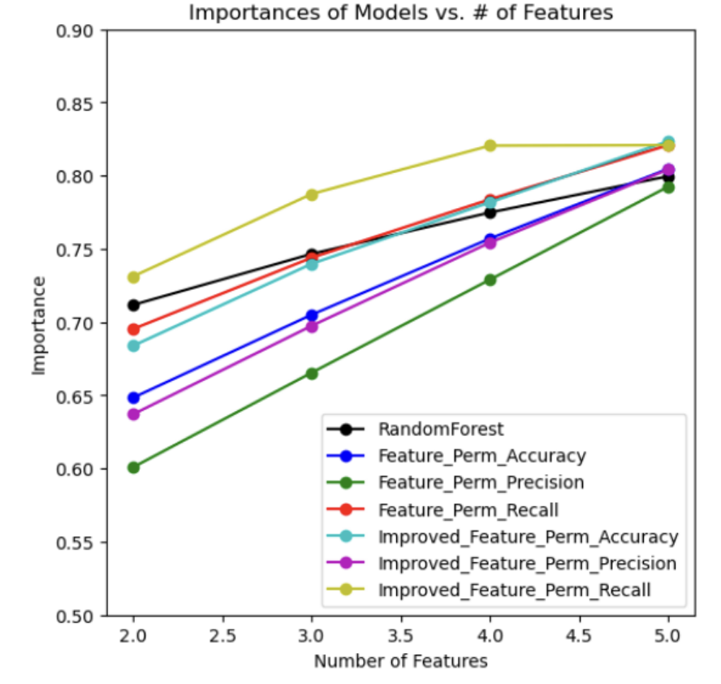
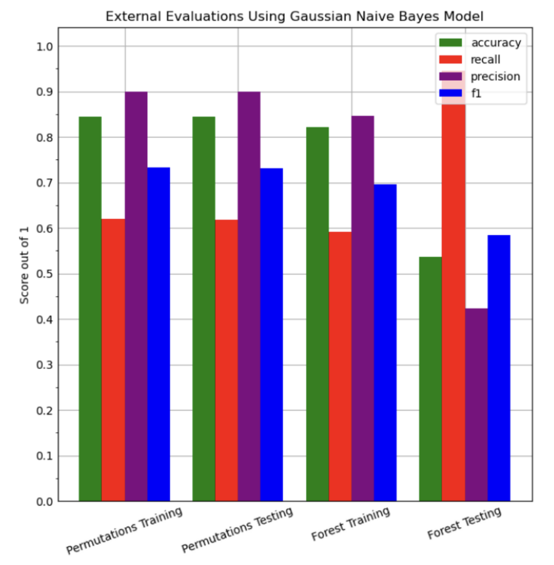
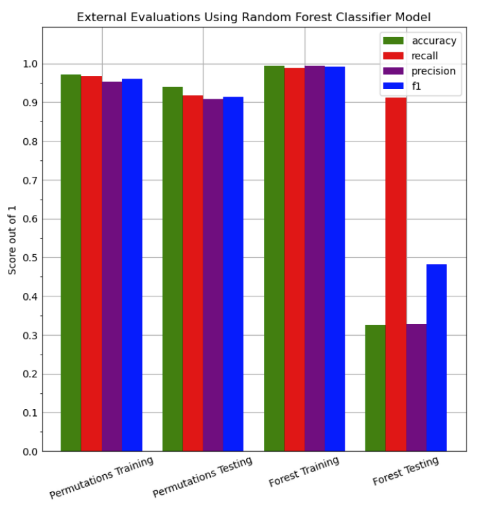
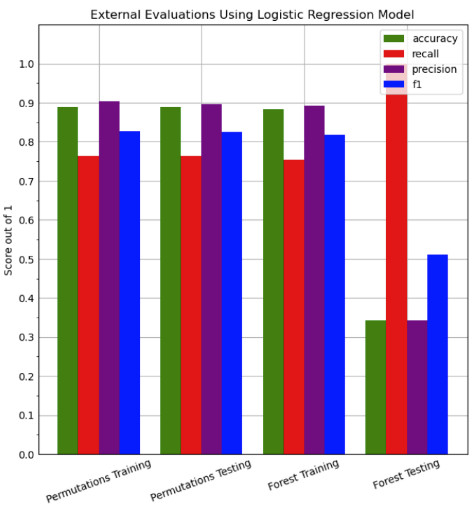

Final Report
Introduction/Background
In this era of the internet and technology we have seen a wide increase in fraudulent and phishy websites where the site owner/attacker attempts to gain sensitive information from the user for his/ her own commercial benefit. This has attracted the interest of many to apply machine learning modeling to automatically identify which websites are scams or not based on a particular website’s characteristics and features. In our project, we will take features such as a website’s url length, the types of symbols the url contains, and number of MX servers and apply machine learning techniques to produce whether a website is fraudulent or not.
Problem Definition
Oftentimes, we may receive an email or see a website that grabs our attention. However, how do we know whether we can trust its information? Because of the rising use of the internet, there has been an unfortunate increase in fraudulent sites that compel users to disclose the wrong information as well as have their money stolen. Even though an average young adult can tell something may or may not be a scam because some things are “too good to be true”, many fraudulent websites are starting to look like legitimate sites. This can be especially problematic for the elderly and younger kids who may not understand what the normal of the internet is. Consequently, in our project, we will be using machine learning techniques to identify suspicious websites to protect ourselves from fraud and its negative consequences.
Data Collection
A research study was conducted on a large number of websites on the internet which identified whether a website was scam or legitimate. The study had two variations of datasets: a small dataset with 58,645 websites and a large dataset of 88,647 websites. Each dataset has 111 features which can be divided into six different categories:
- Whole URL - This identifies the number of a specific attribute inside the whole url of a website. For example, the number of “.” signs in any url is a feature inside the dataset.
- Domain of URL - This identifies the number of a specific attribute inside the domain url of a website. For example, if a website was “goog@e.com\fis@ing\sc@mwebiste”, a value of 1 would be given for the number of “@” signs in the domain url because there is only 1 “@” in “goog@e.com”.
- URL directory - This identifies the number of a specific attribute inside the directory url of a website. Taking the example from point 2, “goog@e.com\fis@ing\sc@mwebiste” would have a value of 2 for the number of “@” signs in the directory url because “fis@ing\sc@mwebiste” has 2 “@” signs.
- URL filename properties - This identifies the number of a specific attribute inside the filename of a url if it contains one. For example, if a website was “drive.google.com\drive\CS_4641.php”, the value of the number of “_” signs in the url filename would be 1 because CS_4641.php has 1 “_” sign.
- URL parameter properties - This identifies the number of a specific attribute inside the parameter of a url if it contains one. For example, if a website was “espn.com\rankings?player=Lebron James&year=2016”, the value of the number of “&” signs would be 1 because of “?player=Lebron James&year=2016” having 1 “&” sign.
- The URL of resolving data and external metrics - This identities the features that cannot directly be seen in a website’s URL. For example, the number of redirects the website goes through when clicked is a feature under this category.
A list of all 111 features with a short description of each of their descriptions are given in detail in the linked research article. Taking in all 111 features a boolean Y value (0,1) was given to identify if a website was a scam site or a legitimate site. For our data analysis, we used the larger dataset of n = 88,647 and d = 111 because a larger dataset was more appropriate to the actual number of websites on the internet.
Methods
To avoid overfitting and underfitting, we made 80% of our dataset our training data and 20% our testing dataset and tested our models separately with them. To reduce the dimensions of our data, we applied various methods such as Principal Component Analysis (PCA), Random Forest Feature Selection, and Feature Permutations. After calculating the most important features in our dataset, we trained our model using gaussian naive bayes, random forests, and logistic regression.
Feature Selection
The accurate detection of scam websites involves several varying features such as types of characters found in the url and the number of MX servers. However, many of these features will not be significant when detecting scam websites and many will be correlated to each other; the additional classification from some features will be marginal and may cause overfitting when building a model. Nevertheless, we first attempted to reduce the dimensions by applying Principal Component Analysis. Although, we were able to conclude that 99% of the model could be predicted by 2 features, PCA didn’t take into consideration the y labels of our data. Geometrically, PCA projects it’s dataset onto an axis that will reduce it’s dimensions and these dimensions are called principal components while maximizing the variance of a given dataset. However, even if the data gets projected onto an axis and separated, the data might not be separable by the y labels which increases the likelihood of an inaccurate training model. This phenomenon happens because the labels are not ensured to be correlated with the variance of the features. Consequently, training a model using binary classification and PCA for our dataset would be very difficult.
Therefore, we moved on to a forward feature selection technique called Tree-Based Feature Selection (random forests) as a pre-processing step. Essentially, all the data points are placed at the root of a tree. The tree expands by splitting the data among different features. The features at each split are selected randomly. The importance of a feature increases as the decrease in impurity increases (i.e trying to get the data in each node to be homogenous); impurity is measured through the Gini index. Subsequent splits decrease the impurity further until ideally, every leaf is either fully "spam" or fully "not spam". This was the rigorous classification approach we were looking for. We were able to reduce the dimensions of the dataset. Furthermore the features that were found were completely different from the PCA approach. Below is a summary table of the results:
| Number of Features Reduced To | Fractional Importance | Important Feature Names |
|---|---|---|
| 2 | 74.5% |
|
| 3 | 77.7% |
|
| 4 | 80.3% |
|
Table 1: Summary of Tree Based Feature Selection
We considered that impurity-based feature importances may be misleading for high-cardinality features (features which may have many unique values). In other words, there is more information present for features with several different values, thereby ranking those features as more important than ones with less cardinality. Our dataset was susceptible to this, as the number of certain characters within a url may vary tremendously between websites. Therefore we tried a backward feature selection approach called Feature Permutations. In feature permutations, a model score with all the features is calculated. Then a feature is removed, and a new model score is calculated. The difference between the two values is the importance of that feature to the model. This is repeated for all the features for each trial, over a total of 100 trials.
Through this approach, the importance of a feature reflects its contributions to the entire model, not its intrinsic predictive value. This approach is more costly in terms of time but it was needed to remove the bias from our pre-processing. The model score is based on an external evaluation. We chose to test accuracy, precision, and recall and generate three different feature permutation models. Below is a summary of our results.
| Number of Features Reduced To | Measure Focus | Fractional Importance | Import Feature Names |
|---|---|---|---|
| 2 | Accuracy | 64.79% |
|
| 2 | Precision | 60.15% |
|
| 2 | Recall | 69.45% |
|
| 3 | Accuracy | 70.82% |
|
| 3 | Precision | 66.76% |
|
| 3 | Recall | 74.89% |
|
| 4 | Accuracy | 76.05% |
|
| 4 | Precision | 73.12% |
|
| 4 | Recall | 78.94% |
|
Table 2: Summary of Permutation Feature Selection
Another, more enhanced feature permutation model was developed. Previously, not all the features were considered in every trial. Furthermore, the decision tree made in each trial only stopped when the leaf nodes contained homogeneous data points (there was no minimum number of points parameter). To improve the model and reduce overfitting, the enhanced feature permutation model considered all the features and contained a minimum number of five data points per leaf. Three different scores (accuracy, precision, and recall) were used for evaluation. Luckily, the most important features remained the same, and the enhanced model scores were better. Their results are shown in the table below along with a graph for all seven models (one impurity-based, three feature permutations, and three enhanced feature permutations).
| Number of Features | Measure Focus | Fractional Importance |
|---|---|---|
| 2 | Accuracy | 67.36% |
| 2 | Precision | 62.49% |
| 2 | Recall | 72.54% |
| 3 | Accuracy | 73.10% |
| 3 | Precision | 68.26% |
| 3 | Recall | 78.42% |
| 4 | Accuracy | 77.59% |
| 4 | Precision | 73.95% |
| 4 | Recall | 82.41% |
Table 3: Feature Number and Fractional Importance at a glance

Graph 1: Importance Models vs. Number of Features
Through all of our tests of feature permutation and impurity-based feature importance, directory_length" and "time_domain_activation" are the most important features, so we visualized the model by only focusing on these two parameters for now. Below is a scatter plot which shows all the training set data points plotted against these two features.

Graph 2: Training data plotted against two most important features
Looking at the visual, one cannot draw a rough estimate line separating a spam website versus a non-spam website; therefore, more features will be required when building the model. The graph with all seven models reveals a plateau in the model score beginning around four features. Therefore, we decided to train and test the model with four features knowing that an increase in the number may be necessary if the test evaluation metrics are not desirable. The four features for the tree-based random forest classifier are directory length, time domain activation, ASN_IP, and time response; the four features for feature permutations are directory length, time domain activation, qty_dot_domain, and length of url. Since our y label is a boolean value that can only be 0 and 1, using linear regression would not be a good idea for our model. Therefore, we tested the model using gaussian naive bayes, random forest, and logistic regression approaches. To evaluate the effectiveness of our prediction models, we calculated accuracy, recall, precision, and f1 scores.
Results and Discussion
TP = true positive TN = true negative FP = false positive FN = false negative
With scam website detection, it is safer and more acceptable to label a safe website as scam than label a scam website as safe. Therefore, the important external evaluation metric minimizes false negatives and does not consider false positives as much; of course, true positives is also important. A high recall score correlates to low false negative counts and high true positive counts. Unfortunately, it does not consider false positives at all. A model which simply labels all websites as scam will have the highest possible recall of 1. Unlike recall, the f1 metric considers false positives in addition to false negatives and true positives. As a result, f1 is a more comprehensive, desirable measure.
Training Using Gaussian Naive Bayes Approach
In this part, we trained our dataset using a Gaussian Naive Bayes Approach on both the Feature Permutation reduced training dataset and Random Forest Feature Selection reduced training dataset. We measured the accuracy, recall, precision, and f1 scores of the model. Below are the results for the training and testing datasets.
| Data Type | Method | Accuracy | Recall | Precision | F1 |
|---|---|---|---|---|---|
| Training Data | Feature Permutation | 84.1% | 61.93% | 89.85% | 73.32% |
| Test Data | Feature Permutation | 84.39% | 61.71% | 89.90% | 73.19% |
| Training Data | Tree Based Selection | 82.13% | 59.09% | 84.58% | 69.58% |
| Test Data | Tree Based Selection | 53.58% | 94.59% | 42.29% | 58.44% |
Table 4: Naive Bayes Approach Table

Graph 3: External Evaluations for Gaussian Naive Bayes Model
Training Using Random Forests
Next, we attempted to use random forests to train our data. These essentially take random data points and then based on the number of selected data points they grow decision trees with more sample data points until each "branch" is pure, or they are leaves. Below is a summary of the results:
| Data Type | Method | Accuracy | Recall | Precision | F1 |
|---|---|---|---|---|---|
| Training Data | Feature Permutation | 97.22% | 96.70% | 95.33% | 96.01% |
| Test Data | Feature Permutation | 94.00% | 91.83% | 90.88% | 91.35% |
| Training Data | Tree Based Selection | 99.4% | 98.79% | 99.46% | 99.12% |
| Test Data | Tree Based Selection | 32.55% | 91.18% | 32.82% | 48.27% |
Table 5: Random Forests Approach Table

Graph 4: External Evaluations for Random Forest Classifier Model
Training Using Logistic Regression
Next, we attempted to use logistic regression to train our data. This method uses the sigmoid function to perform a binary classification. The sigmoid function is a representation of a logit(odds) transformation which is the probability of success divided by the probability of failure. Therefore, the sigmoid’s function range is a value between 0 and 1. So, when the data is inputted, a soft assignment is created of probabilities of which class it belongs to (i.e 0 or 1). If the probability is closer to 1 then the binary classification is 1 or 0 otherwise. Below is a summary of the results:
| Data Type | Method | Accuracy | Recall | Precision | F1 |
|---|---|---|---|---|---|
| Training Data | Feature Permutation | 88.96% | 76.29% | 90.37% | 82.73% |
| Test Data | Feature Permutation | 88.88% | 76.33% | 89.65% | 82.45% |
| Training Data | Tree Based Selection | 88.34% | 75.45% | 89.23% | 81.77% |
| Test Data | Tree Based Selection | 88.34% | 75.45% | 89.23% | 81.77% |
Table 6: Logistic Regression Approach Table

Graph 5: External Evaluations for Logistic Regression Model
Conclusion
Across the gaussian naive bayes, random forest, and logistic regression models, there is always a large discrepancy between the training and testing external evaluation metrics for random forest feature selected data. This supports the idea of random forest feature selection overfitting the training data due to the high-cardinality present in the features. On the contrary, feature permutations successfully extract important features. Although four external evaluation metrics (accuracy, recall, precision, and f1) are provided for each of the three prediction models (gaussian naive bayes, random forest, and logistic regression), f1 is the most important metric.
From the three prediction models, the highest f1 score occurs with feature permutations as the feature selection process and random forests as the prediction model; the f1 score evaluated on the test data is 91.35%. This suggests random forests are very effective models when predicting scam websites. Of course, the features directory length, time domain activation, qty dot domain, and url length are the most important features according to our model. Users who want to avoid scam websites should pay close attention to these characteristics of a website. Although the days of activation of the domain are difficult to obtain, the length of the url and the number of periods in the domain are easy to observe. Websites with large urls should be avoided, especially if they contain several periods.
Contribution Table
| Midterm Report Contribution | |
|---|---|
| Create Additional Visualizations | Abdulrahman |
| Create Evaluation Function with Recall/Precision/F1 | Seo Hyun |
| Implement Logistic Regression Training Portion | Hassan |
| Complete Slides for Video Report | All |
| Edit Video | Seo Hyun and Abdulrahman |
| Update Github Page | Seo Hyun |
| Update Conclusion | Hassan and Abdulrahman |
References
Abbasi, A., Chen, H. A comparison of fraud cues and classification methods for fake escrow website detection. Inf Technol Manag 10, 83–101 (2009). https://doi.org/10.1007/s10799-009-0059-0
Abbasi, A., Zhang, Z., Zimbra, D., Chen, H., & Nunamaker, J. F. (2010). Detecting Fake Websites: The Contribution of Statistical Learning Theory. MIS Quarterly, 34(3), 435–461. https://doi.org/10.2307/25750686
Afanasyeva, O., Shiyan, V., & Goncharova, M. (2021). Cyber Fraud as a Relevant Internet of Things Security Threat. Proceedings of the International Scientific and Practical Conference on Computer and Information Security - Volume 1: INFSEC, 122–126. doi:10.5220/0010619600003170
Vrbančič, G., Fister, I., & Podgorelec, V. (2020). Datasets for phishing websites detection . Data in Brief, 33, 106438. doi:10.1016/j.dib.2020.106438
Files
To view the ipynb file as a pdf, view: Project Source Code Page